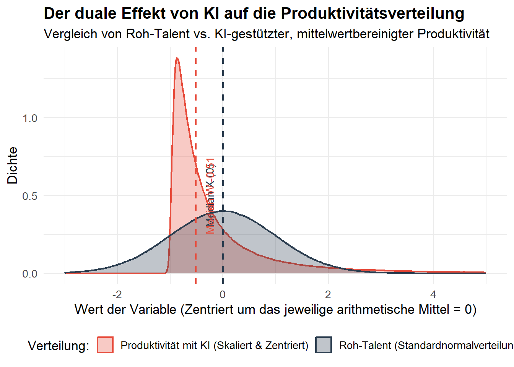

Zusammenfassung Die Integration generativer Künstlicher Intelligenz (KI) in Arbeitsprozesse verändert nicht nur das durchschnittliche Produktivitätsniveau, sondern transformiert die gesamte Struktur der Leistungsverteilung. Empirische Studien deuten auf ein scheinbares Paradoxon hin: KI hilft schwächeren Arbeitskräften überproportional (Skills-Leveling), führt aber gleichzeitig zu extremen Leistungsspitzen bei Top-Talenten (Superstar-Effekt). Dieser Essay präsentiert ein einfaches wahrscheinlichkeitstheoretisches Modell basierend auf einer skalierten und zentrierten Log-Normalverteilung, das beweist, dass diese beiden Effekte keine Widersprüche sind, sondern zwei Seiten derselben mathematischen Transformation darstellen.
1 Einleitung
In der aktuellen arbeitsmarktökonomischen Debatte um Künstliche Intelligenz stehen sich oft zwei Narrative gegenüber: Die optimistische Sichtweise betont das “Skills-Leveling”, bei dem KI als kognitiver Ausgleichsmechanismus fungiert und die Lücke zwischen gering und hoch qualifizierten Beschäftigten schließt. Die pessimistische Sichtweise warnt vor einer nie dagewesenen Konzentration von Produktivität und Einkommen bei wenigen “Superstars”, welche die Technologie als massiven Hebel nutzen.
Beide Narrative sind in der Realität simultan beobachtbar. Um diesen dualen Effekt formal zu greifen, bedarf es einer Modellierung, die über einfache additive Produktivitätsschocks hinausgeht. Im Folgenden wird gezeigt, dass eine einfache Exponentialtransformation einer normalverteilten Grundgesamtheit – unter der zwingenden Bedingung einer relativen Skalierung – exakt diese strukturelle Sprengung und gleichzeitige Stauchung der Leistungsheterogenität abbildet.
2 Das formale Modell der KI-Transformation
Wir definieren das ursprüngliche, von KI unbeeinflusste “Roh-Talent” (oder die Basisproduktivität) einer Arbeitskraft als eine standardnormalverteilte Zufallsvariable:
\[X \sim \mathcal{N}(0, 1)\]
Der Median dieser Basisverteilung liegt bei \(m_X = 0\).
Die Einführung generativer KI modellieren wir als eine exponentielle Transformation der Basisproduktivität. Der Parameter \(\lambda > 0\) misst dabei die Durchdringung und Hebelwirkung der Technologie. Die absolute KI-gestützte Produktivität \(Y\) ist somit log-normalverteilt:
\[Y = e^{\lambda X}\]
Da KI das gesamtökonomische Niveau massiv anhebt, wächst der Erwartungswert (das durchschnittliche Produktivitätsniveau) exponentiell an:
\[\mu_Y = e^{\lambda^2 / 2}\]
Um die Verteilungseffekte isoliert vom reinen Wachstumseffekt betrachten zu können, normieren wir die Leistung auf den neuen Durchschnitt \(\mu_Y\) (Skalierung) und bereinigen sie um den Mittelwert (Zentrierung).
Die resultierende Variable \(W\) misst die relative, mittelwertzentrierte Produktivität einer Arbeitskraft:
Der Median dieser neuen Verteilung verschiebt sich auf \(m_W = e^{-\lambda^2 / 2} - 1\).
3 Die duale Wirkung der KI
Die Analyse der Distanzen zum jeweiligen Median offenbart nun, wie der KI-Parameter \(\lambda\) die Heterogenität der Leistung gleichzeitig verringert (unten) und vergrößert (oben).
3.1 Das Skills-Leveling (Kompression am unteren Rand)
Betrachten wir eine Arbeitskraft, die in der alten Welt weit unterdurchschnittlich leistete (\(x \to -\infty\)). In der Normalverteilung war ihre Distanz zum Median (\(d_X = |x|\)) nach unten hin unbegrenzt.
In der KI-transformierten Welt \(W\) nähert sich die Distanz dieser Person zum neuen Median \(m_W\) einem fixen Grenzwert an:
Da der Exponent negativ ist, ist diese maximale Distanz streng kleiner als \(1\). Die KI zieht algorithmischen Boden ein. Mangelndes Basiswissen wird durch die Technologie kompensiert. Die linke Seite der Verteilung wird massiv in Richtung der Mitte gestaucht – die leistungsschwächsten Akteure rücken (relativ gesehen) deutlich näher an den Median heran.
3.2 Der Superstar-Effekt (Sprengung am oberen Rand)
Für die obere Hälfte der Verteilung (\(x > 0\)) entfaltet die Exponentialfunktion jedoch eine konträre Dynamik. Durch die Transformation wächst die relative Produktivität stark überproportional zum Roh-Talent.
Selbst nach der Division durch den exponentiell gewachsenen Durchschnitt \(\mu_Y\) explodieren die relativen Abstände für Top-Talente. Ein Entwickler, der KI als architektonischen Hebel nutzt, setzt sich meilenweit von der Mitte ab. Mathematisch entsteht ein extrem langes rechtes Ende (Right Tail) in der Dichtefunktion. Die Varianz in der oberen Hälfte der Verteilung wird gesprengt.
4 Visualisierung der Verteilungseffekte
Die aus dem mathematischen Modell abgeleiteten Effekte lassen sich über eine Monte-Carlo-Simulation visualisieren. Der folgende R-Code generiert eine Million Beobachtungen für das initial normalverteilte Roh-Talent (\(X\)) und wendet die oben hergeleitete Skalierung und Zentrierung an, um die relative Produktivität (\(W\)) zu berechnen (hier mit einer angenommenen KI-Hebelwirkung von \(\lambda = 1.2\)).
Code
# Benötigte Bibliotheken ladenlibrary(tidyverse)# 1. Parameter definierenset.seed(42)n <-1000000# Große Stichprobenanzahl für glatte Dichtenlambda <-1.2# KI-Effekt-Stärke # 2. Daten generieren und transformierendata <-tibble(X =rnorm(n, mean =0, sd =1) # Roh-Talent (Standardnormalverteilt)) %>%mutate(Y =exp(lambda * X),mu_Y =exp(lambda^2/2),Z = Y / mu_Y,W = Z -1# Mittelwertbereinigte relative Produktivität )# Mediane berechnenmedian_X <-median(data$X)median_W <-median(data$W)# 3. Daten für ggplot ins Langformat bringendata_long <- data %>%select(X, W) %>%pivot_longer(cols =everything(), names_to ="Verteilung", values_to ="Wert") %>%mutate(Verteilung =case_when( Verteilung =="X"~"Roh-Talent (Standardnormalverteilung)", Verteilung =="W"~"Produktivität mit KI (Skaliert & Zentriert)" ) )# 4. Plot erstellenggplot(data_long, aes(x = Wert, fill = Verteilung, color = Verteilung)) +geom_density(alpha =0.3, size =0.8) +geom_vline(xintercept = median_X, color ="#2c3e50", linetype ="dashed", size =0.8) +geom_vline(xintercept = median_W, color ="#e74c3c", linetype ="dashed", size =0.8) +annotate("text", x = median_X -0.1, y =0.5, label ="Median X (0)", color ="#2c3e50", angle =90, vjust =-0.5) +annotate("text", x = median_W +0.1, y =0.5, label =paste("Median W", round(median_W, 2)), color ="#e74c3c", angle =90, vjust =1.5) +xlim(-3, 5) +# Fokus auf die wesentliche Masse der Verteilungscale_fill_manual(values =c("#e74c3c", "#2c3e50")) +scale_color_manual(values =c("#e74c3c", "#2c3e50")) +labs(title ="Der duale Effekt von KI auf die Produktivitätsverteilung",subtitle ="Vergleich von Roh-Talent vs. KI-gestützter, mittelwertbereinigter Produktivität",x ="Wert der Variable (Zentriert um das jeweilige arithmetische Mittel = 0)",y ="Dichte",fill ="Verteilung:",color ="Verteilung:" ) +theme_minimal(base_size =13) +theme(legend.position ="bottom", plot.title =element_text(face ="bold"))

Interpretation des Plots: Beide Verteilungen haben ihr arithmetisches Mittel exakt bei 0. Dennoch zeigt die KI-transformierte Verteilung (rot) ein völlig asymmetrisches Bild. Der linke Rand bricht abrupt ab und wird dicht an den roten Median gepresst – visuelle Bestätigung des inklusiven Skills-Leveling. Der rechte Rand hingegen läuft breit und flach aus, was den exzessiven Zugewinn der Superstars abbildet, der sich durch die lange Schulter der Dichtefunktion zeigt.
5 Fazit und Implikationen
Das Modell der skalierten Log-Normalverteilung liefert einen geschlossenen mathematischen Beweis für eine scheinbar paradoxe ökonomische Intuition: Generative KI ist gleichzeitig der größte Gleichmacher und der stärkste Polarisator der modernen Arbeitswelt.
Indem sie die Domäne von \([-\infty, \infty]\) auf das einseitig beschränkte Intervall \([-1, \infty)\) (im zentrierten relativen Raum) abbildet, kappt sie den linken Rand der Leistungsschwäche ab und öffnet den rechten Rand für unbegrenzte Skalierungseffekte.
Für das Management von Organisationen und die Arbeitsmarktpolitik ergeben sich daraus zwei zentrale Schlussfolgerungen: Erstens wird die Unterscheidung von Leistungsniveaus in der breiten Masse (unterhalb des Medians) zunehmend schwieriger, da KI zu einer Homogenisierung des Standard-Outputs führt. Zweitens wird der ökonomische Mehrwert extrem asymmetrisch: Der marginale Wert eines Top-Talents, das sich im langen rechten Tail befindet, übersteigt den historisch üblichen Rahmen bei Weitem, da die Technologie kognitive Skaleneffekte ermöglicht, die zuvor ausschließlich maschineller Produktion vorbehalten waren.